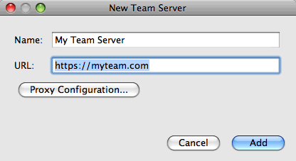

Apache NetBeans
Apache NetBeansLatest release
Trabalhando com um Servidor de Equipe no NetBeans IDE
| This tutorial needs a review. You can open a JIRA issue, or edit it in GitHub following these contribution guidelines. |
Um Servidor de Equipe fornece vários serviços projetados para ajudar a aumentar a produtividade dos desenvolvedores ao fornecer uma infraestrutura para eles colaborarem em um projeto. Para trabalhar com um Servidor de Equipe, instale o plug-in do Servidor de Equipe usando a Central de Atualização do NetBeans. O plug-in registrará automaticamente uma instância do servidor de equipe java.net. Depois de registrar um Servidor de Equipe com o IDE, você pode usufruir dos serviços oferecidos por ele em seus projetos hospedados.
O que é um Servidor de Equipe?
Um Servidor de Equipe pode ser qualquer site on-line que use a infraestrutura Kenai para fornecer hospedagem de projetos, bem como ferramentas e serviços colaborativos. Cada projeto hospedado em um Servidor de Equipe é representado por uma página de projeto que fornece uma descrição e os detalhes sobre o projeto. A página do projeto também permite que o proprietário do projeto ative e desative os serviços associados com o projeto.
Para projetos hospedados em um Servidor de Equipe, o IDE oferece suporte integrado para os serviços a seguir.
Sistemas de Controle de Versão
Uma ferramenta de gerenciamento de código-fonte é essencial quando um grupo de desenvolvedores trabalha na mesma base de código. O IDE oferece suporte integrado a sistemas de controle de versão para ajudar os desenvolvedores a gerenciar as revisões do código-fonte no repositório. O NetBeans IDE fornece suporte para trabalhar com repositórios Mercurial e Subversion hospedados em um Servidor de Equipe. O IDE pode criar automaticamente repositórios locais para projetos hospedados.
Rastreamento de Problemas
Um sistema de rastreamento de problemas permite a desenvolvedores e usuários relatar e rastrear problemas associados a um projeto e proporciona um valioso mecanismo de troca de opiniões para as pessoas envolvidas no projeto. A integração dos sistemas de rastreamento de problemas no IDE permite que os desenvolvedores encontrem, exibam e resolvam os problemas do projeto no IDE. O NetBeans IDE oferece suporte integrado aos rastreadores de problemas Bugzilla e JIRA.
Sistema de Mensagens Instantâneas e Notificações
Se um projeto em um servidor de equipe tiver uma sala de bate-papo ativada, os membros poderão participar na sala de bate-papo do projeto e ter conversas particulares com cada um dos outros membros. O bate-papo permite que os membros troquem mensagens e links de dentro do IDE. O IDE pode receber e exibir mensagens, por exemplo, que notificam quando há alterações no projeto e no repositório.
| Os serviços XMPP para mensagens instantâneas e notificações não estão disponíveis atualmente para java.net. |
Por que Usar um Servidor de Equipe?
Os desenvolvedores que estão colaborando em um projeto precisam de um conjunto de ferramentas e uma infraestrutura que possa ajudá-los a estar conectados entre si e a trabalhar como uma equipe. Além de compartilhar os códigos-fonte, os membros da equipe precisam ser capazes de compartilhar informações e de se comunicar uns com os outros, e a forma pela qual eles compartilham informações depende do tipo de informações que precisam compartilhar. Nem todos os membros da equipe utilizarão as mesmas ferramentas, mas a comunicação entre eles pode ser mais simples quando a infraestrutura e as ferramentas estão integradas. Alguns membros podem ser desenvolvedores, mas também pode haver pessoas responsáveis por projetar a interface do usuário, testar a qualidade, escrever a documentação, gerenciar o ciclo de construção, etc., com diferentes exigências e preferências. Um Servidor de Equipe oferece uma plataforma escalável e flexível para desenvolvimento que pode ser ampliada conforme o projeto aumenta.
Como o desenvolvimento de um projeto pode mudar com o tempo. Em alguns casos, em particular ao iniciar um projeto do zero, você pode desejar definir a infraestrutura do projeto antes de iniciar a codificação. Em outros casos, um projeto já pode ter sido iniciado e algum código pode ter sido escrito, mas o projeto cresceu em seu escopo e pessoas adicionais precisam ser trazidas para trabalhar no projeto. À medida que o tamanho da equipe aumenta, os detalhes sobre o projeto precisam ser captados e transmitidos. Ferramentas, como o rastreador de problemas e as páginas wiki, são úteis para capturar este tipo de informações.
Registrando um Servidor de Equipe
Para aproveitar os serviços do Servidor de Equipe no IDE, é preciso instalar o plug-in do Servidor de Equipe e, a seguir, registrar um Servidor de Equipe no IDE. Por default, a instância do servidor de equipe java.net é registrada quando você instala o plug-in do Servidor de Equipe. Para registrar uma nova instância de um servidor de equipe, execute as etapas a seguir.
-
Selecione Janela > Plug-ins para abrir o Gerenciador de plug-ins.
-
Selecione a guia Plug-ins Disponíveis no Gerenciador de plug-ins e selecione o plug-in do Servidor de Equipe.

Figure 1. Plug-in Servidor de Equipe selecionado no Gerenciador de plug-ins
-
Clique em Instalar no Gerenciador de plug-ins e acompanhe o processo de instalação do plug-in.
Depois que o plug-in Servidor de Equipe estiver instalado, é possível adicionar uma nova instância do servidor de equipe. O plug-in também ativou o Painel de Equipe, que fornece uma visão geral dos projetos da equipe que você cria, abre ou participa.
| Pode ser necessário instalar plug-ins adicionais que são exigidos pelo plug-in Servidor de Equipe e reiniciar o IDE. |
-
Escolha Equipe > Servidor de Equipe > Adicionar Servidor da Equipe no menu principal para abrir a caixa de diálogo Novo Servidor de Equipe.
-
Digite o Nome e o URL do Servidor de Equipe. Clique em Add.

Figure 2. Caixa de diálogo Adicionar Servidor de Equipe
| O IDE verificará para confirmar que o servidor de equipe que você está adicionando é de uma instância do servidor da equipe válida, que é criada na infraestrutura kenai. |
Na janela Serviços você pode ver o novo servidor de equipe listado no nó Servidores de Equipe. O servidor de equipe java.net é adicionado por default quando você instala o plug-in e também é listado no nó Servidores de Equipe.

Figure 3. Nó dos Servidores de Equipe na janela Serviços
É possível efetuar log-in em qualquer instância de servidor de equipe registrado selecionando Equipe > Servidor de Equipe > Log-in no menu principal. Como alternativa, na janela Serviços, clique com o botão direito do mouse no nó Servidores de Equipe na janela Serviços e selecione Log-in ou clique em Log-in no Painel de Equipe.

Figure 4. Caixa de diálogo Adicionar Servidor de Equipe
Depois de registrar o Servidor de Equipe e fazer log-in, é possível abrir o Painel de Equipe para ter uma visão geral de seus projetos e procurar outros projetos que estejam hospedados no Servidor de Equipe. Para criar projetos em um Servidor de Equipe, você precisa ter uma conta no Servidor de Equipe.
Observações.
-
Atualmente, o único Servidor de Equipe que está publicamente disponível é o java.net. Por default, o Servidor de Equipe java.net é registrado quando você instala o plug-in do Servidor de Equipe. Consulte o site java.net para ver detalhes e planos para outras opções do Servidor de Equipe.
-
Você precisa de uma conta no java.net para fazer log-in no servidor de equipe java.net. No entanto, é possível recuperar e abrir muitos dos projetos hospedados no java.net sem fazer log-in.
Recuperando Códigos-fonte de um projeto do Servidor de Equipe
Para muitos projetos que são hospedados no servidor de equipe java.net, não é preciso ser um membro do projeto nem fazer log-in para abrir o projeto e recuperar os códigos-fonte.
-
Escolha Equipe > Servidor de Equipe > Obter Códigos-fonte no menu principal para abrir o assistente Obter Códigos-fonte do Servidor de Equipe.
Alternativamente, é possível abrir um projeto do Servidor de Equipe no Painel de Equipe e, a seguir, clicar em obter no nó Códigos-fonte do projeto no Painel de Equipe.
-
No assistente Obter Códigos-fonte do Servidor de Equipe, clique em Procurar para especificar o repositório do projeto.

Figure 5. Obter Códigos-fonte da caixa de diálogo do Servidor de Equipe
-
Na caixa de diálogo Procurar Projetos da Equipe, digite um termo de pesquisa e clique em Pesquisar.

Figure 6. Caixa de diálogo Procurar Projetos da Equipe
O IDE pesquisa a instância do Servidor de Equipe em busca de projetos que contenham os termos da pesquisa e exibe os resultados na caixa de diálogo.
-
Selecione um projeto na lista. Clique em OK.
-
Para selecionar uma pasta específica no repositório, clique em Procurar ao lado da lista drop-down Pasta a Obter e selecione uma pasta na caixa de diálogo Procurar nas Pastas do Repositório.

Figure 7. Caixa de diálogo Procurar nas Pastas do Repositório
-
Especifique um local em seu sistema local para o repositório local dos códigos-fonte. Clique em Obter do Servidor de Equipe.
Quando você clica em Obter do Servidor de Equipe, o IDE cria um repositório local e recuperará os códigos-fonte do projeto.
Depois que o check-out for concluído, será solicitado que você abra o projeto NetBeans cujo check-out foi feito. Clique em Abrir Projeto na caixa de diálogo para selecionar os projetos que deseja abrir no IDE. Selecione Cancelar se não quiser abrir nenhum dos projetos com check-out.
Consulte Também
Para obter informações adicionais sobre o uso do NetBeans IDE em um ambiente colaborativo, consulte os recursos a seguir:
-
Trilha de Aprendizado da Integração com Ferramentas e Serviços Externos
-
Trabalhando em um Ambiente Colaborativo em Desenvolvendo Aplicações com o NetBeans IDE